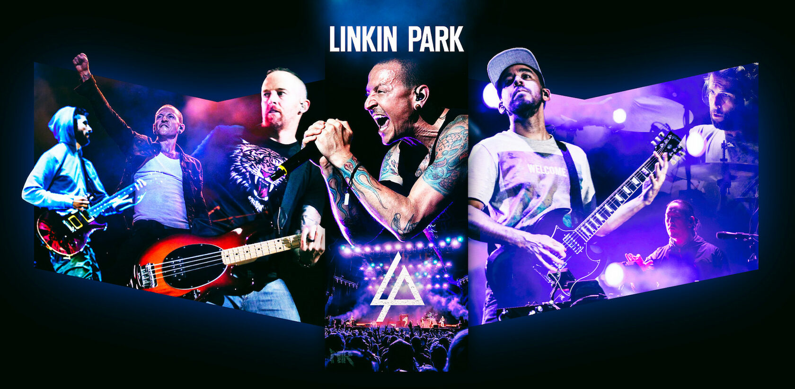

Linkin Park

Биография группы:
Группа была основана в 1996 году двумя одноклассниками Майком Шинодой и Брэдом Дэлсоном (которые и сейчас находятся в составе группы).
Изначально она называлась SuperXero. Позже они сменили название на Xero. В её составе были Майк, Брэд, Джо, Дэйв, Роб и Марк.
Несмотря на ограниченные ресурсы, ребята начали запись нескольких песен в спальне Шиноды, которая и стала первой студией группы.
После отказов многих лейблов от контракта с группой напряжения и недовольства в ней становилось всё больше.
Понимая, что у этой группы не будет будущего, Марк покинул коллектив в поисках других проектов.
Дэйву Фарреллу также пришлось оставить их, так как у его другого проекта начался тур.
Xero затратила значительное время на поиски замены вокалу Марка, пока ребята не узнали об одном вокалисте, проживающем в Аризоне — Честере Беннингтоне.
Через своего знакомого Джеффа Блю, вице-президента Zomba Music музыканты позвонили Беннингтону и попросили выслать им свой вокал на демокассете.
Беннингтон, оторвавшись от празднования своего дня рождения, записал демокассету и дал прослушать её ребятам по телефону.
Его уникальный голос произвёл на группу огромное впечатление. На следующий день Честер прилетел в Лос-Анджелес.
После того, как Честер согласился присоединиться к группе, она стала называться Hybrid Theory.
Идея о смешивании стилей вокала дала толчок для сочинения нового материала, что помогло возродить группу.
Наступили времена перемен. У ребят возникли проблемы с британской электронной группой, которая имела название Hybrid и обвиняла их в плагиате, поэтому Честер Беннингтон придумал новое название для группы — Lincoln Park, потому что он постоянно ходил в студию именно через этот парк в Санта-Монике.
Но домен lincolnpark.com был занят. В английском языке фамилия Lincoln произносится как Linkin, и группа назвалась Linkin Park, получив домен linkinpark.com.
Состав группы:
Текущий:
- Майк Шинода — вокал, рэп, ритм-гитара, клавишные, семплы (1996—н.в.), синтезатор (2008–н.в.)
- Брэд Дэлсон — соло-гитара (1996—н.в.), бэк-вокал (2006—н.в.)
- Дэвид Фаррелл — бас-гитара (1996—1999, 2000—н.в.), бэк-вокал (2006—н.в.)
- Джо Хан — диджей, семплы, программирование (1996—н.в.), бэк-вокал (2006—н.в.)
- Роб Бурдон — ударные, перкуссия (1996—н.в.), иногда бэк-вокал (2006—н.в.)
Бывшие участники:
- Марк Уэйкфилд — ведущий вокал (1996—1998)
- Честер Беннингтон — ведущий вокал (1999—2017; умер в 2017), иногда ритм-гитара (2006—2017)
Дополнительные факты:
- 23 июня 2011 года на концерте Linkin Park состоялся флешмоб, который прошёл в Москве на Красной площади. Затем французы повторили московский флэшмоб у себя на родине 1 июля.
- Занявшая второе место на Евровидении 2010 популярная турецкая рэпкор/альтернативная-метал-группа MaNga у себя на родине имеет шуточное прозвище «Турецкий Линкин Парк»
- 30 апреля 2010 года выпустили игру для iPhone «8-Bit Rebellion!». В качестве поощрения за прохождение игры игроку предоставляется возможность прослушать эксклюзивный трек «Blackbirds».
А 24 сентября на iPhone вышла игра «Linkin Park Revenge» в стиле Guitar Hero.
- Во время выступления Linkin Park на фестивале Rock im Park 3 июня 2012 года перед исполнением «Sabotage» (кавер-версия песни Beastie Boys) участник LPU прямо на сцене сделал предложение своей девушке.
- Джазовый музыкант Эрик Льюис заявил, что благодаря музыке Linkin Park он, поначалу разочаровавшись в джазовом мире, снова начал творить.
По совету знакомых послушав песню «Somewhere I Belong», он услышал голос Честера Беннингтона, который напомнил ему звук саксофона Джона Колтрейна, а гармония — музыку Майлса Дейвиса, и вдохновившись этим, Льюис снова начал работать, создал проект Rockjazz.
- Видео «One Step Closer» было снято в подземной шахте. Кроме того, деньги на выпуск этого сингла были собраны четырьмя тысячами фанатов.
- 19 января 2010 благотворительной организацией Music for Relief, которую создала Linkin Park, была организована акция, чья цель — собрать средства для помощи пострадавшим от землетрясений на Гаити.
Ссылки: